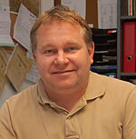
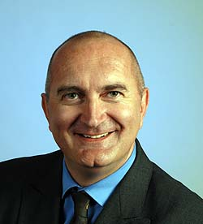
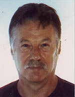
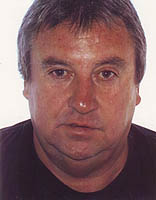

Matthias Kopp -Ortsvorsteher-
wurde am 02.04.1966 in Hagenow geboren. Er ist verheiratet und hat zwei Söhne und eine Tochter. Matthias Kopp wohnt seit 1967 in Leipzig und ist seit 1997 in Hartmannsdorf ansässig. Sein Hochschulstudium an der Humboldtuniversität zu Berlin schloss er 1993 erfolgreich als Diplomfischereiingenieur ab. Anschließend war er im Bereich Gewässersanierung und bei der bundeseigenen Grundstücksverwaltung BVVG beschäftigt. Heute arbeitet er als Leiter der Gewässerwirtschaft im Anglerverband Leipzig e.V. Matthias Kopp wurde 2009 in den Ortschaftsrat gewählt. Er wurde am 11.01.2012 einstimmig zum Ortsvorsteher gewählt. Telefonisch erreichbar unter: 0170 - 8228356

Karsten Klitscher -Stellvertreter-
wurde am 02.04.65 in Kassel geboren. Er ist verheiratet und hat einen Sohn. Er wohnt seit 1992 in Leipzig und seit 2004 im Ortsteil Hartmannsdorf. Nach Abitur durchlief er eine Berufsausbildung zum Speditionskaufmann. Anschließend absolvierte er eine Weiterbildung zum Verkehrsfachwirt und arbeitet heute erfolgreich als Prokurist eines mittelständischen Speditionsunternehmens. Karsten Klitscher trat 1979 der Jungen Union bei und ist seit 1983 Mitglied der CDU. Karsten Klitscher wurde 2009 in den Ortschaftsrat gewählt und ist einer der zwei Stellvertreter des Ortsvorstehers. Telefonisch erreichbar unter: 0176 -18361414

Dieter Keil -Stellvertreter-
Wurde am 26.06.1948 in Eythra geboren. Er ist verheiratet und hat zwei erwachsene Töchter. Nach der Umsiedlung wegen Braunkohleabbau wohnt er seit 1986 in Knautnaundorf. Als gelernter Werkzeugmacher war Dieter Keil bis 1993 als Schichtleiter im „VEB Plastverarbeitung Zwenkau“ tätig. Nach anschließenden Beschäftigungen im Kunststoffverpackungswerk Groitzsch und im Leipziger Siemens Telefonwerk war er bis zum Beginn seiner passiven Altersteilzeit im Prüfungsausschuss der IHK tätig. Dieter Keil ist seit 1990 ununterbrochen Mitglied des Gemeinderates und später des Ortschaftsrates. Er ist telefonisch unter 0341 – 4291014 erreichbar.Bernd Knappe
beschreibender Text
